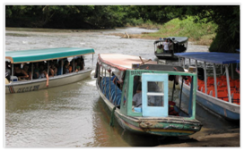
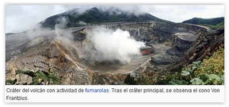
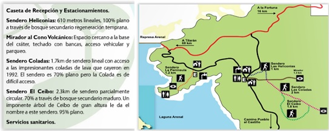
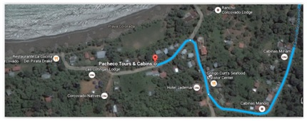
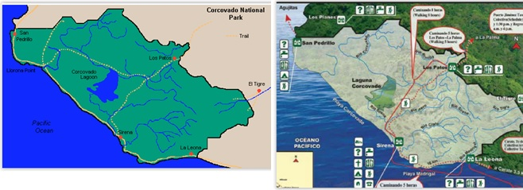

Tiempo: Multiplicar ×2 los tiempos de Google Maps por carreteras no pavimentadas y atascos · Moneda: 1 € ≈ 600 colones · Aceptan dólares pero mejor pagar en colones · Enchufes: especiales, comprar adaptador en supermercado por 1 $ · Horario solar: Amanece ~5:00h · Anochece ~18:00h · Plato típico: El casado (frijoles, arroz, carne, ensalada y fruta) ~2.700 colones con bebida · Impuesto salida: 29 $ por persona en el aeropuerto
San José — Llegada a Costa Rica
Dinero: Cajero Banco Costa Rica (lobby puerta 6), Scotia Bank (reclamo cinta 5) o BAC San José (reclamo cinta 2, puerta 3)
Recogida: Transfer al hotel con rótulo a la derecha al salir · Si retraso +45 min: +50625472323 ext. 1385 · Taxis oficiales: naranjas
Tryp by Wyndham San José Sabana
38th & 40th Street, 3rd Avenue · Cerca del Parque Metropolitano La Sabana · No pasear de noche, mejor taxi al centro o descansar
Restaurante Machu Pichu / Pizza Hut
Subiendo a la Avenida 3 a la derecha, bajando por la 1ª y luego a la izquierda por Av. 1 después de 2 calles. Alternativa: Pizza Hut bajando por la 38 perpendicular, Avenida 2, 5 calles a la izquierda.
Tortuguero — Canales de la selva y tortugas marinas
Ruta: Carretera 32 → Parque Nacional Braulio Carrillo → Túnel Zurquí → Guápiles → Cariari → La Pavona (Rancho El Rio Suerte)
Canoa: La Pavona → Tortuguero · 1.600 colones (~3$) · Dos compañías: Clic Clic y Coopetraca · Salidas: 7:30, 13:00 y 16:30h · Llegar 30 min antes · Coger la canoa de las 13:00h
Parking La Pavona: 10$/noche o 50$/semana con seguridad 24h
Llegada a Tortuguero por los canales
El viaje en barco dura aproximadamente una hora y 15 minutos. Durante los primeros 45 minutos se navega por la selva en el Río Suerte. Luego el río se encuentra con el río Tortuguero, mucho más ancho. Se pasa al Cerro Tortuguero, el punto más alto de la costa del Caribe (119 metros). Paradas en San Francisco y otros pueblos a lo largo del río.

Tour de las Tortugas Marinas — Playa nocturna
Las tortugas marinas llegan a la playa de Tortuguero a anidar de noche. Una de las experiencias más emocionantes del viaje: ver a las tortugas baúl o verdes depositar sus huevos en la arena oscura, guiados por los rangers del parque que controlan el acceso para no perturbar el proceso.
Casa Marbella
A la izquierda por el río después del puesto de policía · Reservar aquí las excursiones de tortugas y canoas
Miss Junie's / Buddha Café / Miss Miriam's
Miss Junie's: Marisco con salsa de coco · 3ª a la derecha desde el hotel · Buddha Café: Pizza, crepes de gambas, Buddasalata (aguacate, maíz, palmito) · antes del hotel · Miss Miriam's: Langostas enteras, Gallo pinto · al lado del campo de fútbol · Super Morpho Pulpería: Supermercado con comida, frente al embarcadero
Tortuguero — Senderos acuáticos y bosque tropical
Excursión con Daryl — Senderos acuáticos
Lancha equipada con un silencioso motor fuera borda de 4 tiempos y un motor eléctrico que permite acercarse a la fauna sin asustarla. Tres horas por los canales del parque nacional, uno de los ecosistemas más biodiversos de Costa Rica: monos, caimanes, tortugas, tucanes, manatíes y cientos de especies de aves entre la vegetación densa.
Sendero El Gavilán — Bosque Tropical
Sendero de solo 2 km que va paralelo a la playa dentro del Parque Nacional. Alquilar botas de agua en el hotel si hay lluvia. Alternativa más exigente: la caminata al Cerro de Barro (la colina más alta · 2h · con guía recomendado), desde donde se aprecia el paisaje de canales, el bosque tropical lluvioso, las lagunas y el mar Caribe. El punto de salida está en San Francisco, a 10-15 minutos en bote del centro.
Cataratas de La Paz · Volcán Poás
Distancia: Tortuguero → Cataratas: ~155 km · ~3h30
La Paz Waterfall Gardens
La atracción de las cataratas más famosas de Costa Rica, con la espectacular Catarata de La Paz como protagonista. Centro de rescate y reserva privada de vida silvestre con más de 100 especies de animales. Más de 3,5 km de senderos que incluyen Mariposario, Jardín de Colibríes, Serpentario, Ranario, Casita Típica y Lago de las Truchas. Almuerzo buffet en el Restaurante Colibrí. Llegar antes de las 15:00h para hacer el recorrido completo.
Churrasco Hotel y Restaurante
Justo después de pasar el pueblo de Poasito · 13 km / 20 min de las Cataratas · Bajar por la 126 y coger la 120 a la derecha
Volcán Poás · Volcán Arenal — La Fortuna
Parque Nacional del Volcán Poás
Uno de los volcanes más activos de Costa Rica. El cráter principal tiene forma semicircular con un diámetro norte-sur de 1.320 metros y una profundidad de 300 metros. Desde el mirador (2.560 m) se ven las fumarolas activas y la laguna cratérica de color verde ácido.
El Sendero Botos parte del lado derecho del cráter con un recorrido circular de aproximadamente 1 hora que llega a la laguna Botos, un lago tranquilo en el interior de un cráter antiguo cubierto de bosque nuboso. En junio de 2016 registró varias erupciones freáticas.

Arenal Observatory Lodge & Spa
Lat: 10.434215 / Long: -84.701500 · Desde La Fortuna por la 142 durante 14,3 km y girar a la izquierda hacia Cerro Chato · Pista de 2,2 km · Siempre a la izquierda en los cruces · 350 hectáreas · 11 km de senderos · Caminatas diarias con guías naturalistas
Volcán Arenal · Catarata La Fortuna · Liberia
Parque Nacional Volcán Arenal
Seguir el Sendero Las Coladas (1,7 km) llegando hasta la corriente de lava solidificada de 1992. Camino muy bonito con vistas al volcán y a la laguna de Arenal. Para volver al aparcamiento, el Sendero del Cedro (2,3 km), con un imponente árbol de Ceibo de gran altura. Ambos senderos son relativamente planos.

Catarata La Fortuna
Caída espectacular de 70 metros en medio del bosque tropical. Desde el parking: pasar por la caseta de pago (10.000 colones) y por las tiendas de recuerdos y agua. Antes de la bajada, un mirador ofrece una vista preciosa de media catarata entre la vegetación. Luego bajan casi quinientos escalones hasta el pie de la cascada, donde el agua es perfecta para un baño refrescante. Excursión a caballo disponible (3,5h · 45$).
Al pasar por Bagaces, a unos 4 km a la izquierda por carretera de tierra (2 km). Parking de 1.000-2.000 colones y entrada voluntaria de 1.000 colones. Fácil de bajar hasta la catarata. Vale mucho la pena si hay tiempo.
Hotel Las Espuelas
129 km / 2h29 desde La Fortuna · Por la 142 hasta Cañas y la 1 hacia Liberia · Hotel justo antes de entrar en Liberia por la Calle Real · Por la tarde ir a Liberia a cenar y comprar bocatas para el día siguiente
Parque Nacional Rincón de la Vieja
Sector Las Pailas — Volcán activo y fuentes termales
El sendero circular por el sector Las Pailas pasa por las zonas más interesantes del parque: fumarolas activas con fuerte olor a azufre, pozas de barro hirviendo, géiseres y una preciosa catarata con poza para bañarse. El camino discurre entre bosque seco y vegetación volcánica.
Nota: se pasa por una finca privada donde hay que pagar 700 colones por persona para que abran una valla. El olor a azufre es intenso en las zonas volcánicas pero desaparece en la catarata y durante gran parte del camino.
A 29 min / 28 km desde Liberia: por la 21 hacia la izquierda en Liberia, en Guardia a la derecha por la 253 y enseguida a la izquierda por la 254 hasta Playa Panamá. Alternativa tranquila para descansar después de la mañana volcánica.
Monteverde — El Bosque Nuboso
Reserva Biológica del Bosque Nuboso de Monteverde
Uno de los ecosistemas más especiales del planeta: el bosque nuboso, donde la niebla es constante y la vegetación absolutamente densa. La caminata hasta "La Ventana": un mirador donde se puede sentir la fuerza de los vientos alisios cargados de humedad que provienen de la costa atlántica y descienden hacia el Pacífico.
El puente colgante "Wilford Guindon": bromelias, orquídeas, helechos y musgos habitando las copas de los árboles. El circuito recomendado (máximo 8 km): Quebrada Cuecha → Sendero el Río → Sendero Pantanoso → La Ventana → Sendero Wilford Guindon → Sendero Chomogo → Sendero Roble → Sendero Camino → Sendero Bosque Nuboso.
Stella's Bakery
Pedir el casado y un bocadillo de ensalada de pollo con agua grande — todo por 6.000 colones. Bajando desde el Bosque Eterno de los Niños, un poco a la izquierda.
Ranario de Monteverde y Bosque Eterno de los Niños
El Bosque Eterno de los Niños (3.500 colones · 1,4 km del hotel): la reserva privada más grande del país con 20.000 hectáreas de bosque tropical. Bordea el Parque Nacional Volcán Arenal y la parte alta de Monteverde. El Ranario: tour guiado mostrando las diversas especies de ranas en sus micro-hábitats naturales, con las pequeñas y coloridas ranas venenosas como protagonistas.
Hotel Mariposa B&B
N 10° 18.060, W 84° 48.332 · Por la 1 → pasado Matapalo coger la 145 a la izquierda → Carretera 606 hacia Reserva Monteverde → continuar por la 620
Selvatura · Manuel Antonio — La playa más bonita de Centroamérica
Selvatura Park — Puentes colgantes de Santa Elena
El recorrido de los Treetop Walkways (1,9 millas · ~3 km) atraviesa el Bosque Nuboso de Monteverde a nivel de las copas de los árboles, sobre puentes colgantes con vistas únicas a la flora y fauna del bosque. Situado junto a la reserva Cloud Forest de San Gerardo. Alternativa más emocionante: el Zip Line Canopy Tour (50$ · 15 cables · 18 plataformas · Tarzan Swing al final). La mejor empresa de canopy: Monteverde Extremo.
Al pasar por el puente del río Tárcoles, parar en el arcén para ver los cocodrilos en el río. No dejar el coche solo ya que suelen robar en esa zona.
Manuel Antonio — Playa y Parque Nacional
El hotel Jungle Beach está a 200 metros antes de la Playa Espadilla. La Playa Manuel Antonio, en el margen derecho de Punta Central, tiene fama de ser la playa más bonita de toda Centroamérica. Aguas tranquilas, arena fina y la selva tropical llegando hasta el borde del mar. Dar una vuelta por la playa Espadilla o meterse en la piscina del hotel si el tiempo no acompaña.
Jungle Beach Hotel
Carretera al Parque Nacional Manuel Antonio, 200 m antes de la Playa Espadilla · Mano izquierda
Parque Manuel Antonio · Bahía Drake — La costa salvaje
Parque Nacional Manuel Antonio
Red de senderos que llevan a todas las playas del parque: la famosa Playa Manuel Antonio y el mirador sobre la Playa de Puerto Escondido, accesible solo según las mareas. Monos capuchinos, perezosos, mapaches y una biodiversidad extraordinaria. Consejo: entrar a las 7h; a las 9h ya está lleno y a las 10h las playas rebosan de veraneantes.
Bote Sierpe → Bahía Drake: 11:30h (15$) o 15:30h (20$) · 1h15 de duración · Dejar el coche en Hotel Oleaje Sereno o en el Rest. Las Vegas
Atención: En Bahía Drake no hay embarcadero; hay que subirse los pantalones y quitarse las zapatillas para llegar a la orilla con el equipaje
Pacheco Tours & Cabins
Estarán esperando al llegar en bote · Cenar en el restaurante La Cocina a la izquierda del hotel si no es posible en el propio hotel

Parque Nacional de Corcovado · Isla del Caño
Parque Nacional de Corcovado
Considerado por National Geographic como "el lugar de mayor biodiversidad del planeta". La Península de Osa alberga el 2,5% de la biodiversidad mundial en solo el 0,001% de la superficie terrestre. Cuatro especies de monos, tapires, jaguares, pumas, delfines, ballenas jorobadas y más de 400 especies de aves viven aquí. Contratar la visita con el hotel (guía obligatorio desde 2013).

Alternativa: Isla del Caño — Reserva biológica marina
Ubicada a 20 km de la costa de la Península de Osa. Antiguo cementerio precolombino de 300 hectáreas. El tour incluye: barco 45 min (posibles avistamientos de tortugas, ballenas, delfines, aves marinas y peces voladores), snorkeling en "El Jardín" (~1h), caminata al sendero "Mirador" (~1h) y almuerzo en la playa. Segundo snorkeling de vuelta en "Roca de los Jureles" (30-40 min).
Vuelta — Bahía Drake · Uvita · San José · Alajuela
Ruta vuelta: Carretera 34 → parar en Playa Uvita (comer) → 27 a la derecha en Cerro Alto → Autopista Próspero Fernández → San José → Carretera 39 → Autopista 1 → Parque La Sabana (dejar el coche)
Alternativa más larga: Por el Cerro Chirripó (254 km / 4h48, carretera mala y montañosa)
Playa Uvita — El Parque Nacional Marino Ballena
Una parada imprescindible en el camino de vuelta. La Punta Uvita forma con la marea baja la silueta perfecta de una cola de ballena de arena, dando nombre al Parque Nacional Marino Ballena. Aguas cristalinas, snorkeling posible y avistamiento de ballenas jorobadas (julio a noviembre). Una de las costas más vírgenes del Pacífico costarricense.
Rostipollos / Tierra Gaucha
Rostipollos: 200 m recto antes de llegar a la calle 48. Si está cerrado, Tierra Gaucha en la misma calle 48 subiendo.
Airport Costa Rica B&B
N 10° 0.321, W 84° 11.258 · Calle 2, Rio de Alajuela · Subiendo por la calle La Empacadora, segunda esquina a la derecha · 16 km / 16 min del aeropuerto por la 1 · El hotel lleva al aeropuerto (2,8 km / 6 min) — Salir a las 4:45h